Fund Conservation
Fund an investment-ready project, a threatened species, a whole landscape or a multi-year program, with a clear scope and outcomes from day one.
Learn more →
We bring First Nations organisations, government, philanthropy, business, investors and delivery partners together to turn conservation priorities into funded, measurable outcomes on the ground.
Our 2026 figures, from our Impact Report 2025.
Choose how you want to work with us. Most partners combine two or three, and every partnership is shaped around what you want to achieve.
Fund an investment-ready project, a threatened species, a whole landscape or a multi-year program, with a clear scope and outcomes from day one.
Learn more →Co-design a conservation program with us, across a priority landscape, across state borders or around a theme that matters to you.
Learn more →Explore larger-scale, blended and nature finance opportunities where they are the right fit for the outcome you want.
Learn more →Bring your people and your customers into the work through volunteering, workplace giving, campaigns and employee engagement.
Learn more →Start where it makes sense for you and grow your partnership from there, from a single site or species to a multi-year program or a whole landscape.

One site or one species, with a defined budget, scope and outputs.
Corporate partnership, Foundation grants, Major gifts
For example: 229 hectares added to Woomargama National Park in 2018.
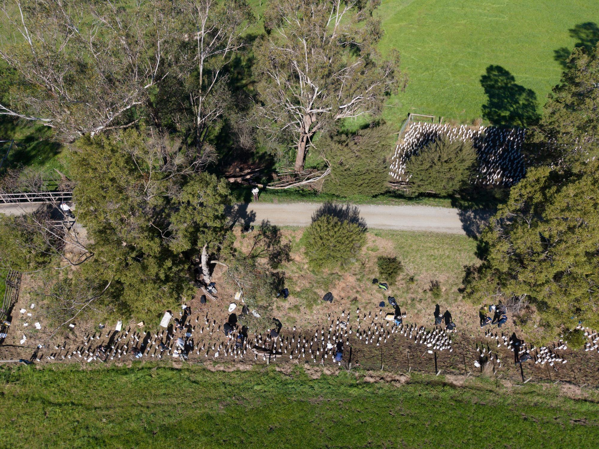
Several sites over several years, often crossing state lines.
Multi-year corporate, Foundations & PAFs, Government programs
For example: Curb Wombat Mange Program, with NSW National Parks and Wildlife Service.

A whole landscape, with Traditional Custodians, governments, funders and delivery organisations working to one plan.
Government co-investment, Philanthropy, Gifts in wills, Blended finance (emerging)
For example: Remarkable Southern Flinders, on Nukunu Country.
We are developing nature and blended finance models that bring public, philanthropic and private capital together around long-term landscape outcomes. This is early work, not an established investment product.
Register your interest →We find the priority, originate the project, bring the partners and the funding together, contract the delivery, oversee it, and report on what it achieved.
Traditional Owner ranger groups, community nurseries and Landcare networks, councils, scientists and wildlife organisations do the specialist work on the ground, with their knowledge leading it.
We find the priority and shape it into a project.
You: Discover
Traditional Custodians, government, funders and delivery partners at one table.
You: Match
Public, philanthropic and corporate capital combined in one deal.
You: Design
Specialist partners engaged against clear milestones.
You: Deliver
Ecological, financial and partnership outcomes tracked.
You: Measure
Results published and the next phase shaped.
You: Report
Not every partnership includes volunteering, activation or public recognition. We build in only what serves the goal.
Our portfolio reaches right across Australia, organised under our three areas of work. Explore by pillar or by location to see the kind of work you could be part of.
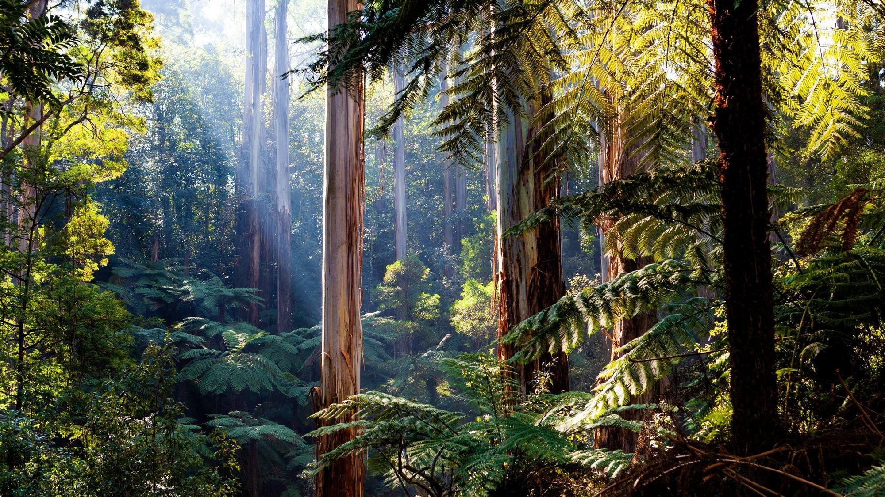
Land acquisition, protection and connectivity for the national reserve system.
No featured projects in this location yet. Talk to us about what’s in development.
All Growing National Parks projects →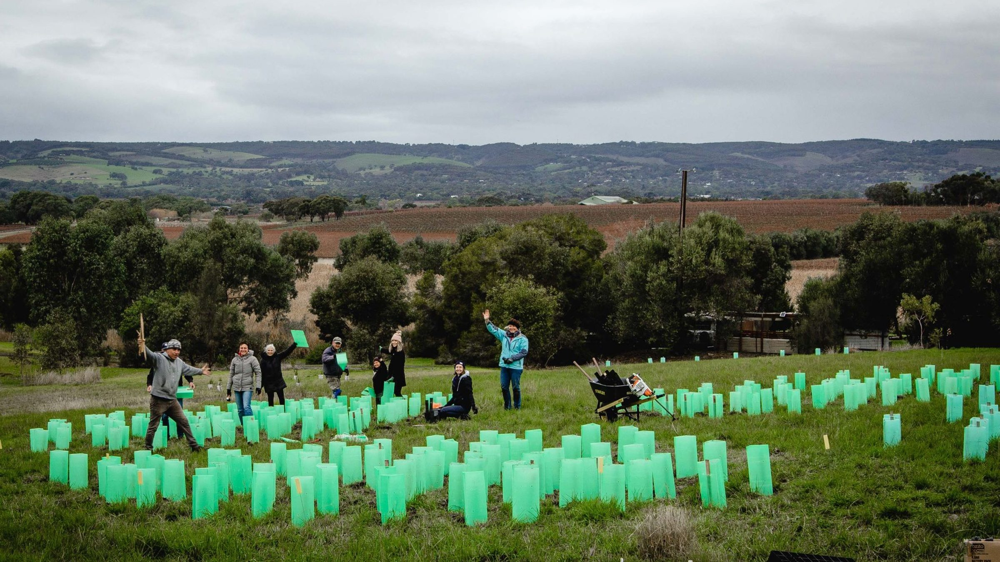
Restoration, community nurseries and landscape resilience at scale.
No featured projects in this location yet. Talk to us about what’s in development.
All Healing the Land projects →
Recovery programs for threatened species and the habitat they depend on.
No featured projects in this location yet. Talk to us about what’s in development.
All Saving Species projects →These are examples from our portfolio. Not every project is open for new investment, so reach out to us to talk about where your investment could have the most impact.
Ask about current opportunitiesHow a business, a government agency and a gift in a will each worked with us, and what it achieved on the ground.
See our impact Corporate
Corporate Government
Government Philanthropy
PhilanthropyHelp the landscape recover after the 2019–20 bushfires.
Built the nursery network and the program to plant one million trees.
L’OCCITANE Ecosystem Restoration Fund, alongside One Tree Planted and community nurseries.
Community-led nurseries and planting, now restoring a Ramsar-listed wetland on Hindmarsh Island (Kumerangk).
Millionth tree planted in 2024 and more than 2,500 hectares of habitat restored across the program.
“FNPW has a long track record of delivering meaningful sustainability outcomes, and we trust them to achieve measurable results on a national scale.”Pierre-Emmanuel Joffre, Managing Director, L’OCCITANE AustraliaRead the full story →
Sarcoptic mange across the bare-nosed wombat’s range.
Designed and ran rapid response grants from 2023 to 2025.
NSW National Parks and Wildlife Service, Indigenous community organisations and licensed wildlife organisations.
Up to $2 million in grants for treatment, burrow flaps, training and monitoring.
18,582 treatments delivered against a 10,000 target, with an estimated 1,498 wombats treated (Impact Report 2025).
Rare land at the Murray Mouth came up for sale, with a narrow window to secure it.
Acquisition partner, with much of our contribution coming from a gift in a will.
Ngarrindjeri Aboriginal Corporation, the Australian Government and the South Australian Government.
Management plan being developed with the Ngarrindjeri Aboriginal Corporation and the Department for Environment and Water.
1,900 hectares added to Coorong National Park in 2026, protecting up to 65 nationally listed threatened species.
One person from first conversation to final report.
Quarterly updates and an annual impact report with data for your own board.
Many organisations in one project, all pointed the same way.
See the work on the ground, with recognition where you want it.

Measurable conservation outcomes inside your sustainability, ESG and nature commitments, reported in a way your board can use.
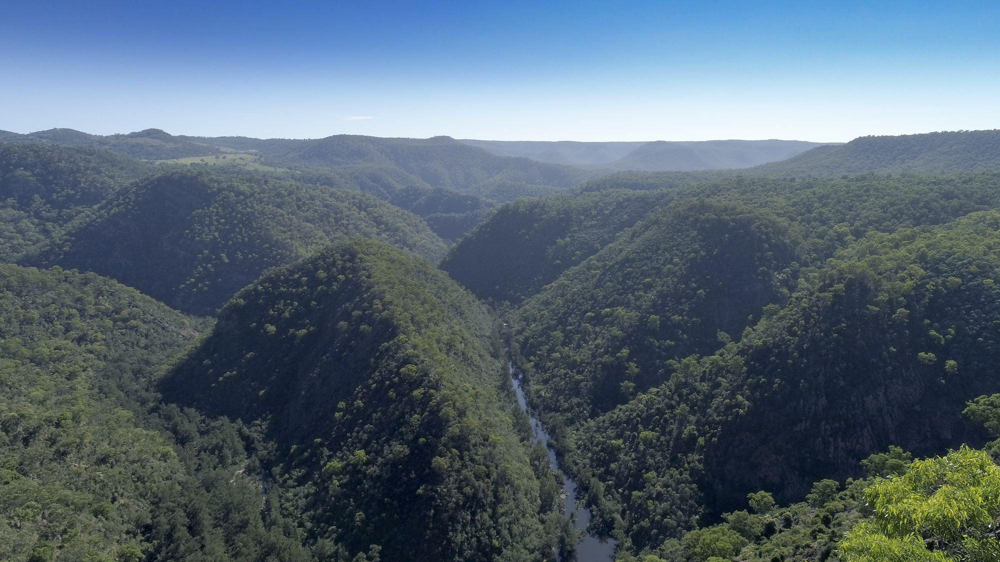
Land acquisition, grant programs, landscape-scale programs and co-funding with Australian, state and territory governments.


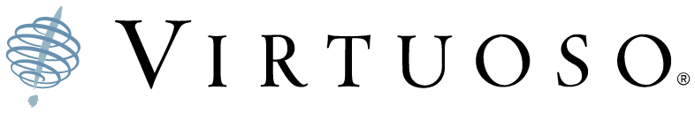

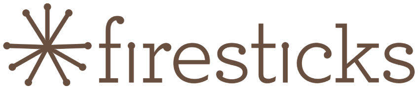
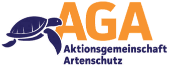


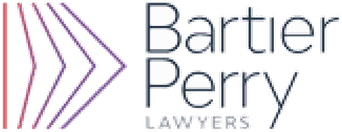


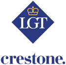
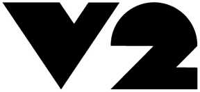


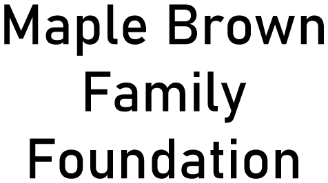


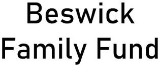
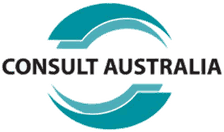

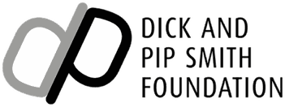
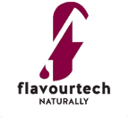
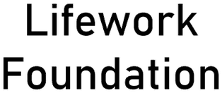
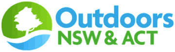


Tell us what you want to achieve and we will connect you with the right person.

Email fnpw@fnpw.org.au or call 1800 898 626 and we will help directly.
First Nations organisations, government agencies, corporates, foundations and trusts, private ancillary funds, philanthropists, investors and delivery partners.
[Selection process to confirm]
[Indicative range to confirm]
Every partnership has agreed outcomes and a reporting schedule, and we publish our overall results each year in our Impact Report.
We agree what each partner can say before any announcement, so every claim is accurate and backed by evidence.
[Typical timeframes to confirm]
By an unremunerated volunteer board with four standing committees. We are registered with the ACNC and publish audited accounts every year.
Other ways to get involved: Corporate volunteering · Workplace giving · Give a Tree · Cause-related campaigns · Fundraising